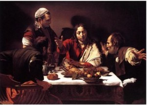
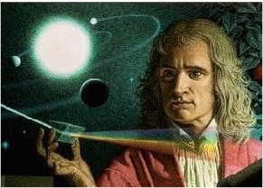

The Catholic Church responds to the Protestant surge in Northern Europe with reform and religious wars. Jesuits open universities teaching Scholasticism infused with Renaissance humanism.
1630 Herbert of Cherbury contrasts revealed/positive religion to natural religion. Natural religion is universal, rational, and compatible with nature. Organized religion is by its nature corrupt.
1640~ Descartes asserts "natural reason," as the highest intellectual authority: ”cogito ergo sum.”
1666 Philipp Spener - The Pietists argue for spiritual and moral regeneration to overcome the sterility and abstractness of the Enlightenment, and maintain that god can be experienced directly. They criticize Kant as too universal, and lacking a personal experience of god. They seek a religion of the heart - ‘How do I know I'm saved?” “Accept Jesus as your personal savior.” The Great Awakening has arrived.

Caravaggio - The Pietist Schoolman

~~~~~~~~